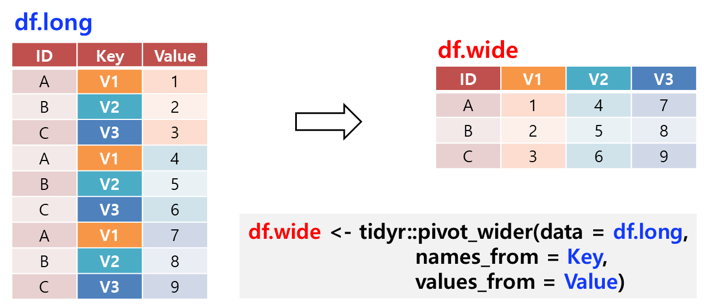

Chapter 3 Data Wrangling
Figure 3.1: A typical data science process.

Figure 3.2: An illustration of left join (top left panel) and right join (top right panel), and inner join (bottom left panel) and full join (bottom right panel).

Figure 3.3: An illustration of the join functions.
Figure 3.4: An illustration of `pivot_longer()’ function.

Figure 3.5: An illustration of the `pivot_wider()’ function.